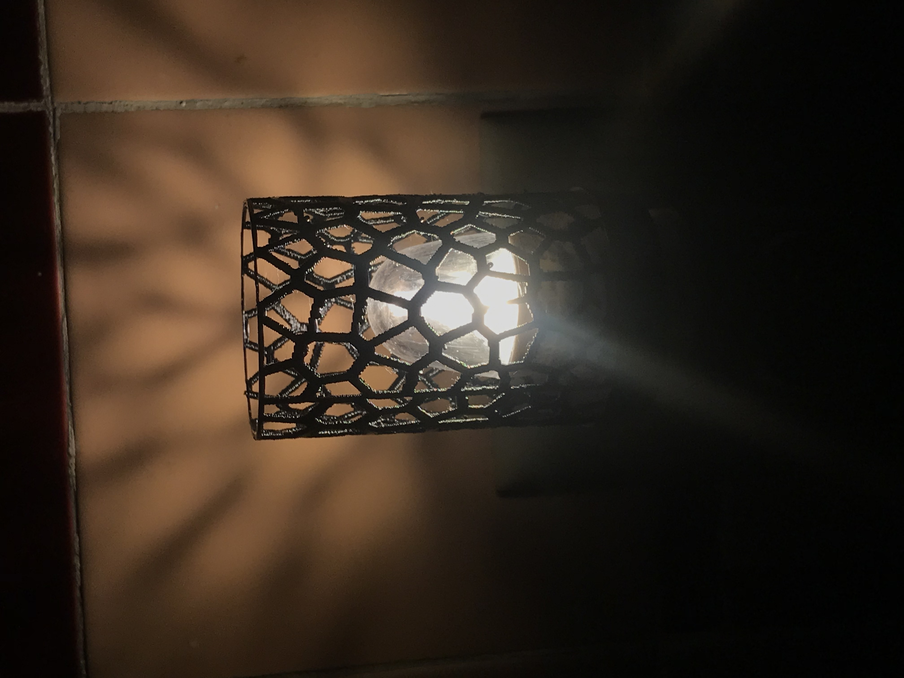

Assignment 1: First Rhino Model!
Assignment 1 was to prep an image in Photoshop to vectorize in Illustrator, then add to Rhino and export a STL!
Assignment 2: Getting Started with 3D printing!

Assignment 2 was getting started with simple prints! The hardest part was not rushing the process of getting the printer built, set up and calibrated.
Assignment 3: Getting Started with Grasshopper!

Assignment 3 was getting started with Grasshopper! Grasshopper parametrically manipulates Rhino files. The hardest part was to use the right commands in the right manner to achieve results.
Assignment 4: Getting Meshy and Lamps!

Assignment 4 was making progress in Grasshopper! Grasshopper made me sad. I almost gave up but then stuck with it.